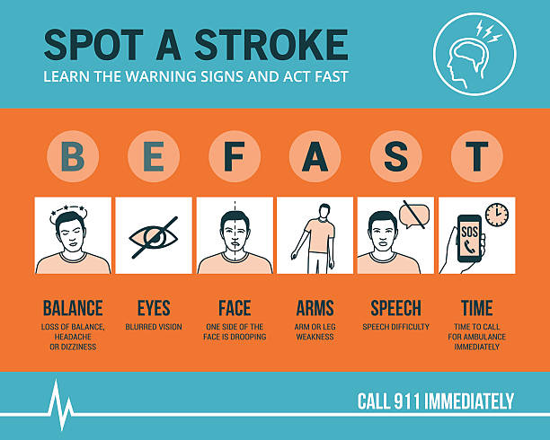

Use this simple checklist to identify a stroke in progress.
Sudden loss of balance or coordination.
Sudden blurred or double vision.
Does one side of the face droop?
Is one arm weak or numb?
Is speech slurred or strange?
Call emergency services immediately!
Unlike other medical conditions, stroke symptoms usually happen suddenly. Within seconds, one side of your body may stop responding.

Watch real-life demonstrations of stroke symptoms.
A detailed walkthrough of each sign.
What it feels like when a stroke starts.